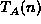

Data Structures and Algorithms
with Object-Oriented Design Patterns in Java
Data Structures and Algorithms
with Object-Oriented Design Patterns in JavaSuppose we are considering two algorithms, A and B, for solving a given problem. Furthermore, let us say that we have done a careful analysis of the running times of each of the algorithms and determined them to be  and , respectively, where n is a measure of the problem size. Then it should be a fairly simple matter to compare the two functions and to determine which algorithm is the best!
But is it really that simple?
What exactly does it mean for one function, say ,
to be better than another function, ?
One possibility arises if we know the problem size a priori.
For example, suppose the problem size is  and .
Then clearly algorithm A is better than algorithm B
for problem size
and .
Then clearly algorithm A is better than algorithm B
for problem size  .
.
In the general case, we have no a priori knowledge of the problem size.
However, if it can be shown, say,
that for all  ,
then algorithm A is better than algorithm B
regardless of the problem size.
,
then algorithm A is better than algorithm B
regardless of the problem size.
Unfortunately, we usually don't know the problem size beforehand, nor is it true that one of the functions is less than or equal the other over the entire range of problem sizes. In this case, we consider the asymptotic behavior of the two functions for very large problem sizes.
 Copyright © 1998 by Bruno R. Preiss, P.Eng. All rights reserved.
Copyright © 1998 by Bruno R. Preiss, P.Eng. All rights reserved.